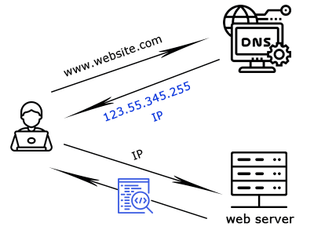
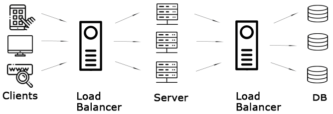
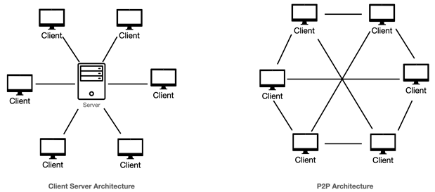

Internet – це глобальна мережа, що з'єднує комп'ютери по всьому світу, дозволяючи обмінюватися даними. Її можна уявити як глобальну дорогу для інформації.
Domain - це ім'я, яке використовується для доступу до ресурсів в Інтернеті (наприклад, example.com). Це зручна назва для користувачів замість довгих IP-адрес.
Асоціація: як назва вулиці в місті.
URL (Uniform Resource Locator) - це повна адреса, за якою можна знайти ресурс в Інтернеті (наприклад, https://example.com/page).
Асоціація: як повна адреса будинку.
IP (Internet Protocol) - це унікальна числова адреса, яка призначається кожному пристрою в Інтернеті для ідентифікації та зв'язку. Деякі користувачі думають, що IP-адреси виглядають як 1234.567.89.000, але правильний формат — 192.168.1.1.
Асоціація: як поштовий індекс для будівель.
DNS (Domain Name System) - це система, яка перетворює доменні імена на IP-адреси, щоб пристрої могли знаходити один одного в Інтернеті.
Асоціація: як телефонна книга, де імена людей (домени) пов'язані з номерами телефонів (IP-адресами).
Кешування - це процес збереження даних на пристроях або серверах для швидкого доступу до них у майбутньому. Це прискорює роботу з інтернет-ресурсами.
Асоціація: як зберігання часто використовуваних речей у ящику, щоб не шукати їх щоразу.
Клієнт-серверна архітектура — це модель взаємодії, у якій пристрої (клієнти) надсилають запити, а сервери їх обробляють і надсилають відповіді. Це фундаментальний принцип організації взаємодії у комп’ютерних системах, де завдання розподілені між двома основними компонентами: клієнтом і сервером.
Клієнти — це пристрої або програми, які запитують інформацію чи послуги у сервера. Вони можуть бути як програмними (веб-браузери, мобільні додатки), так і апаратними (смартфони, планшети, термінали, так звані «тонкі клієнти»).
Сервери — це комп’ютери, які надають клієнтам запитану інформацію або послуги. Вони можуть виконувати різні функції: зберігання даних, обробку запитів, обчислення тощо.
Протоколи визначають правила, за якими клієнти й сервери обмінюються інформацією.
Приклади:
Сервери використовують бази даних для ефективного зберігання, управління та отримання інформації за запитом клієнта.
Мережа забезпечує зв’язок між клієнтами та серверами. Вона може бути:
Компонент, що захищає передані дані. Методи безпеки:
Пристрої, які виконують мінімальну обробку даних локально і покладаються на сервер для обчислень і
зберігання інформації.
Приклад: веб-браузери, термінальні пристрої.
Пристрої або програми, які виконують більшість обчислень та зберігають дані локально, без сильної
залежності від сервера.
Приклад: настільні додатки, текстові редактори, ігрові клієнти.
Типи мережевої архітектури — це моделі організації комп'ютерних мереж, які визначають спосіб взаємодії пристроїв та розподіл ролей між ними.
Усі пристрої рівноправні, можуть одночасно виступати як сервери та клієнти. Якщо один комп’ютер
вимкнеться, мережа продовжить працювати.
Приклад: торрент-мережі (BitTorrent).
Аналогія: Вечірка у друзів – кожен може принести їжу, музику, спілкуватися з будь-ким. Немає головного організатора, якщо хтось піде – свято триває.
Є сервери, які обслуговують клієнтів, і клієнти, що звертаються до серверів. Якщо сервер вимкнеться,
клієнти втратять доступ до сервісу.
Приклад: веб-сайти, онлайн-сервіси.
Аналогія: Банкет у ресторані – є адміністратор, офіціанти, шеф-кухар. Якщо адміністратор або кухня перестануть працювати – банкет зупиниться.